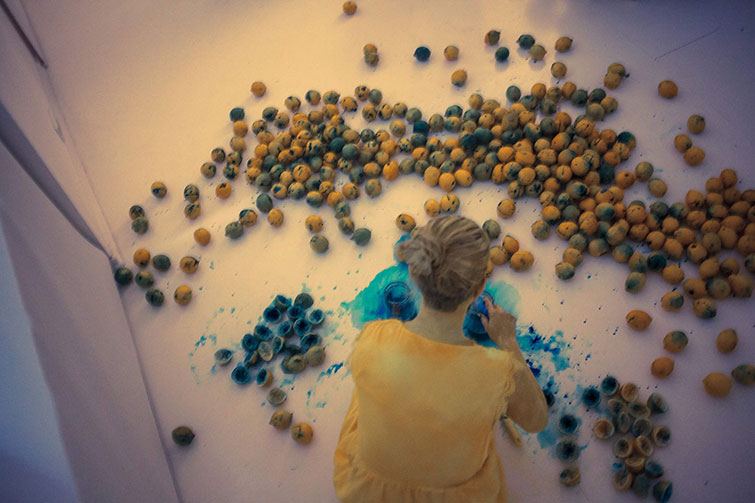
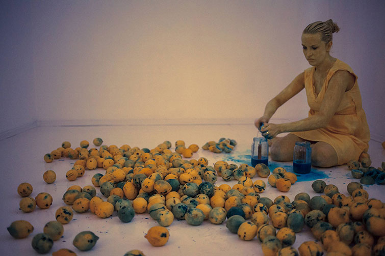
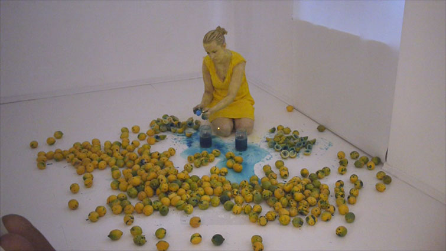
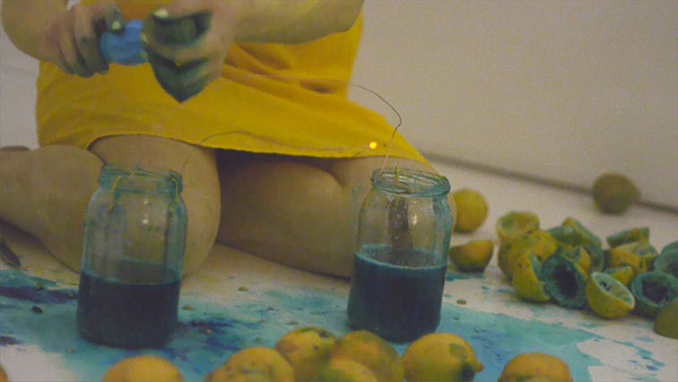
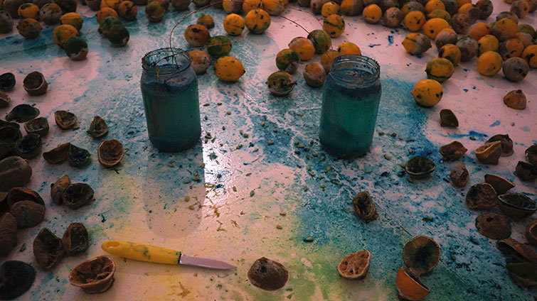
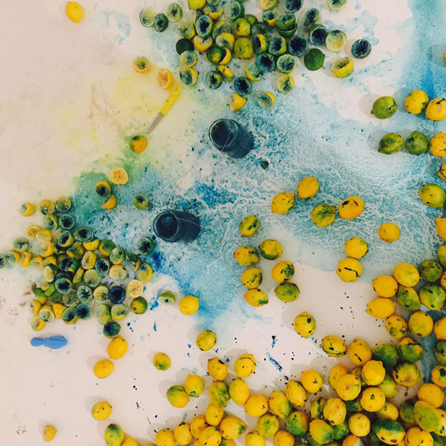
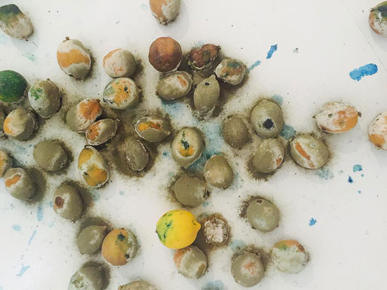
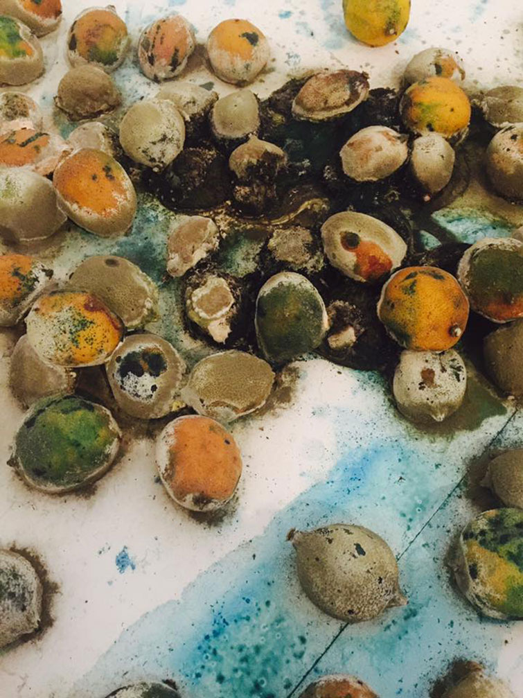
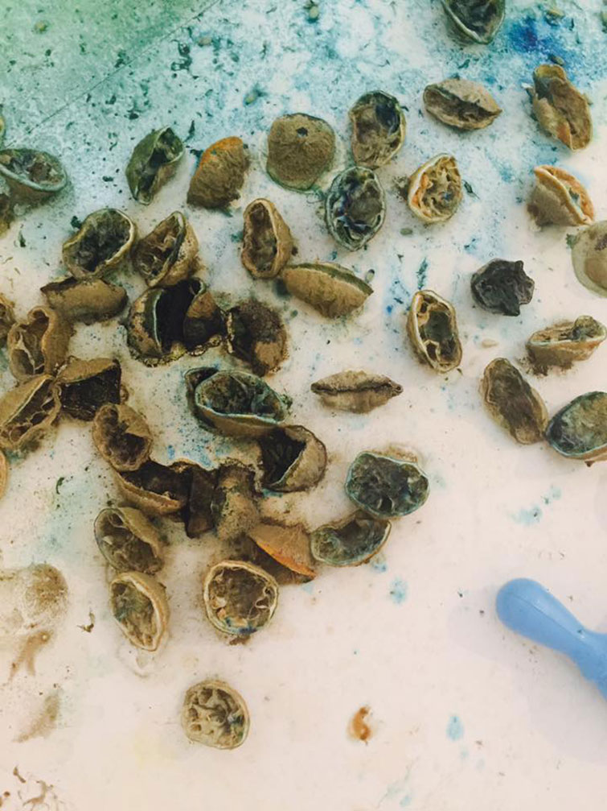

KWAS









performance KWAS
Galeria Bardzo Biala, Warszawa 2016
Wystawa "Jagna Zdzirska nie umie malowac"
KWAS - beznadziejny dowcip, negatywna sytuacja, silny narkotyk LSD, zwiazek chemiczny, kwasna substancja.
Mozna zrobic komus kwas, narobic kwasu - zle sie zachowac, zrazic do siebie ludzi, pozostawic negatywne wspomnienie. Jednak kwas powoduje, ze zapamietujemy sytuacje, zachowanie, posmak i odczucie.
Indywidualisci/stki bywaja jak kwas - zracy/e, zapadajacy/e w pamiec, ostrzy/re, ale i spelniajacy/e swoje zadanie.
Jednoczesnie kwas cytrynowy przewodzi energie elektryczna, dzieki ktorej moze zapalic sie swiatlo, czyli moze byc czyms pozytywnym.
Podobno ludzie chorzy psychicznie uzywaja w zestawieniu kolorow dopelniajacych, glownie zoltego i niebieskiego - jak Van Gogh.
kamera, montaz Michal Iwaszkiewicz
fot. Bartlomiej Glowacki